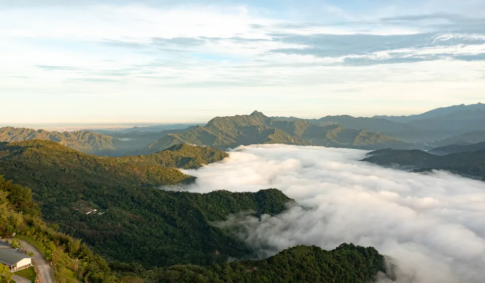

ZJ FILM & DESIGN · EST. 2020
讓影像，
成為品牌的語言。
從品牌形象到人生的重要時刻，
以影像與設計，留下值得記住的故事。

A DIFFERENT PERSPECTIVE.TAIWAN / ZJ FILM
PHOTOGRAPHY · FILM · DESIGN品牌 / 婚禮 / 活動 / 視覺設計全台到場服務
01 / SELECTED WORK
作品，自己說故事。
02 / THE STUDIO
從一個想法，
到有溫度的畫面。
ZJ影像自 2020 年投入影像創作、品牌視覺與活動紀錄。從企業形象影片、建案視覺，到現場導播與整合製作，與你一起把故事轉化成畫面。
2020—
企業與品牌影像
形象影片、宣傳素材與品牌視覺。
2021—
文化與地方紀錄
彰化、南投地區文化與民俗活動紀錄。
2024—
政府標案與活動導播
南投縣政府標案、文化活動與現場紀錄。
03 / WHAT WE DO